C++
Create a Date class with private member ints day, month, and year. Add a setDate() method to set the date. Add a print() public member function to display the date.
Write a test rig to exercise this class.
// Date1.cpp -- Simple date class
#include <iostream>
using namespace std;
class Date {
private:
int mo;
int day;
int year;
public:
void SetDate(int = 1, int = 1, int = 2000);
void PrintDate();
};
void Date::SetDate(int m, int d, int y) {
mo = m;
day = d;
year = y;
}
void Date::PrintDate() {
cout << mo << "/" << day << "/" << year << endl;
}
int main() {
Date date1, date2;
date2.SetDate(10, 15, 2009);
cout << "Using default arguments: ";
date1.PrintDate();
cout << "Using passed arguments: ";
date2.PrintDate();
}If every object must be initialized with a separate setter call, are we making the client do too much work?
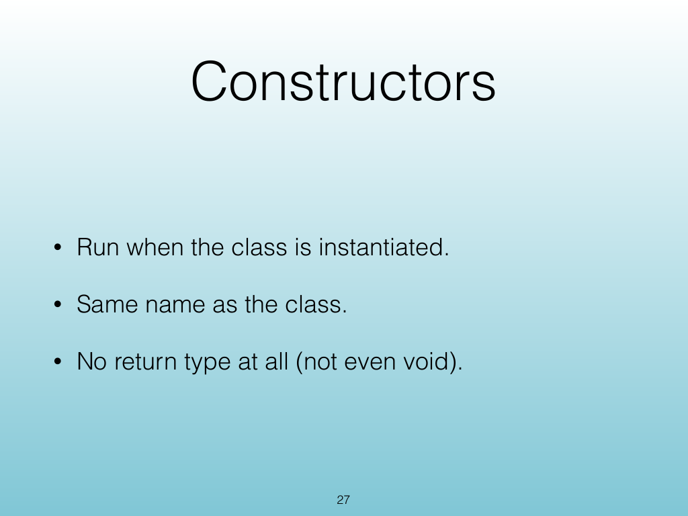
The repeated pattern is object creation followed by a setter call. A constructor moves that initialization into the object-creation step.
A constructor is a special member function with the same name as its class and no return type. It runs automatically when an object is instantiated.
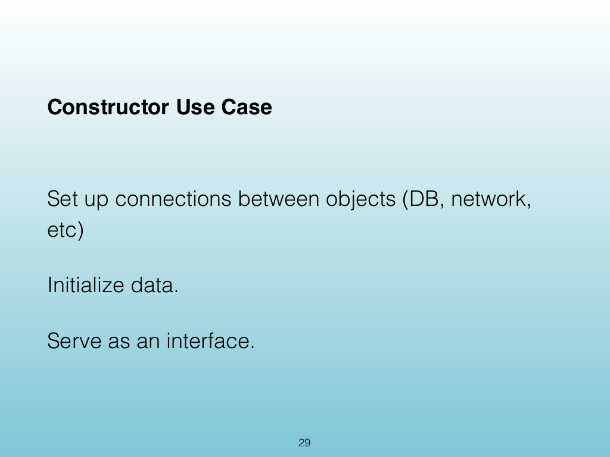
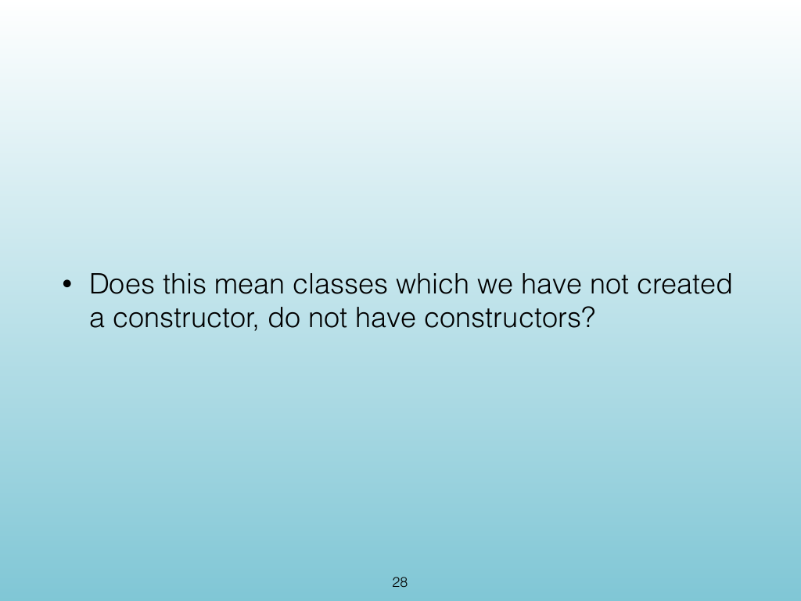
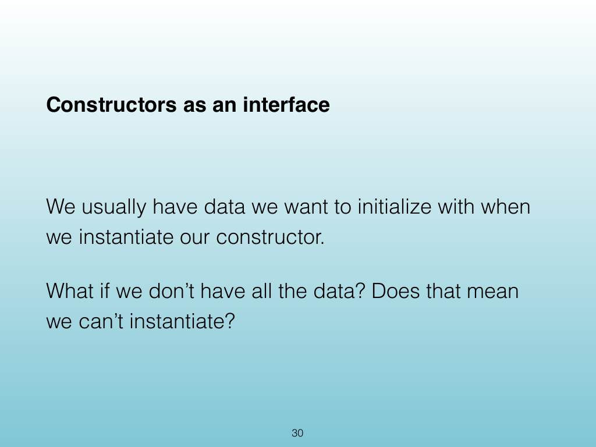
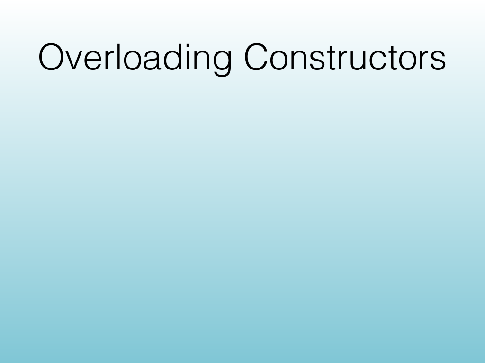
What if a class needs more than one way to initialize an object?
One class
Sale()
Sale(0.06)
Sale(0.06, 24.95)
Each constructor signature is an entry path to the same class. The compiler selects the matching constructor from the arguments supplied at instantiation.
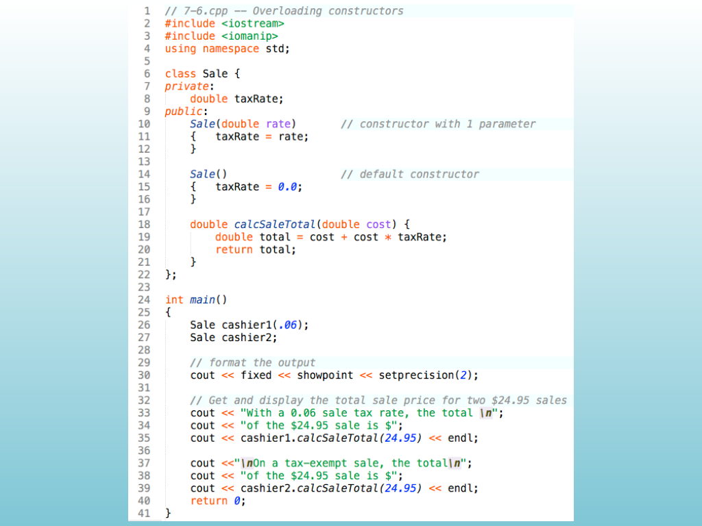
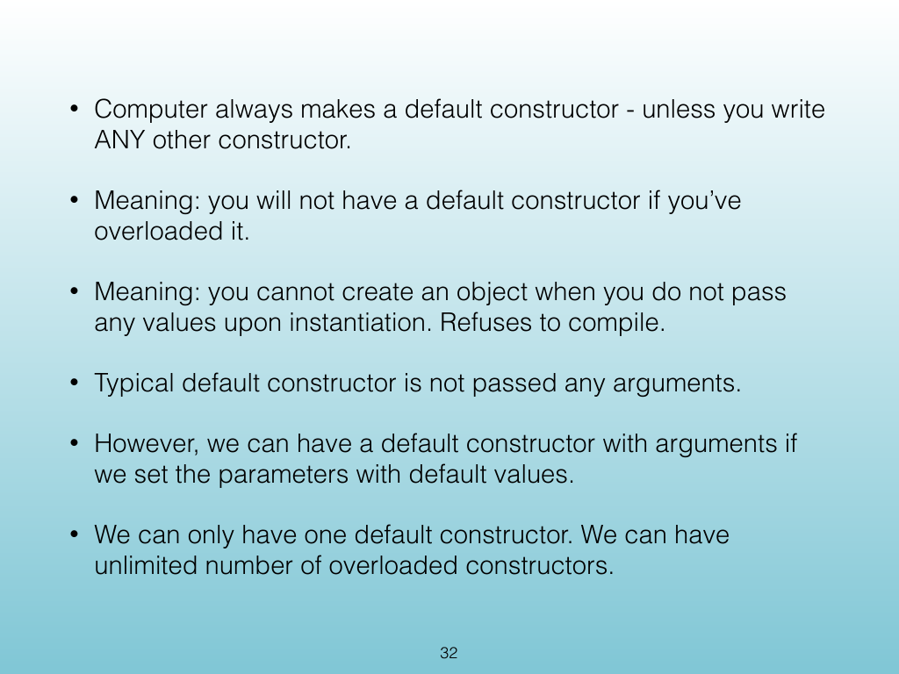
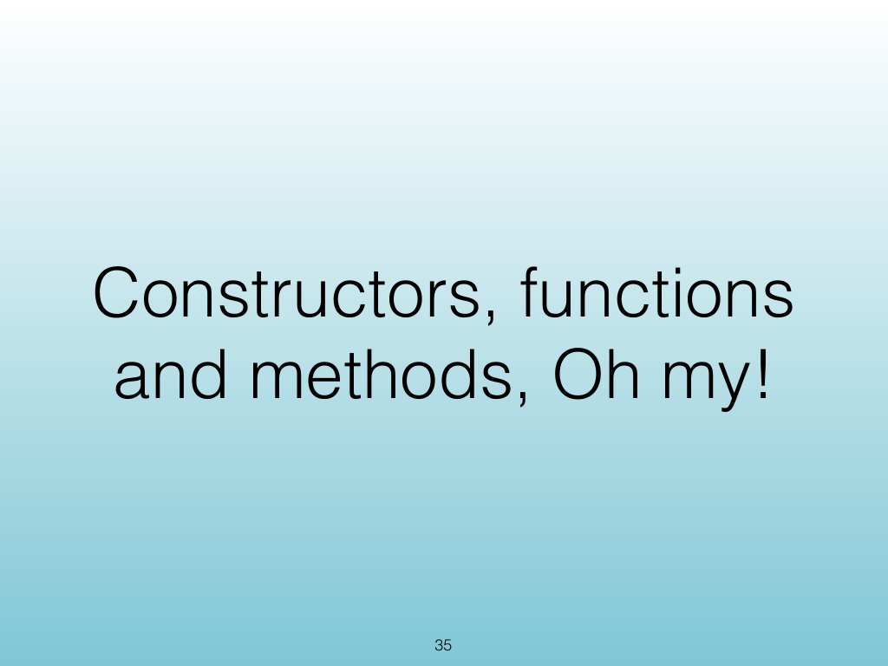
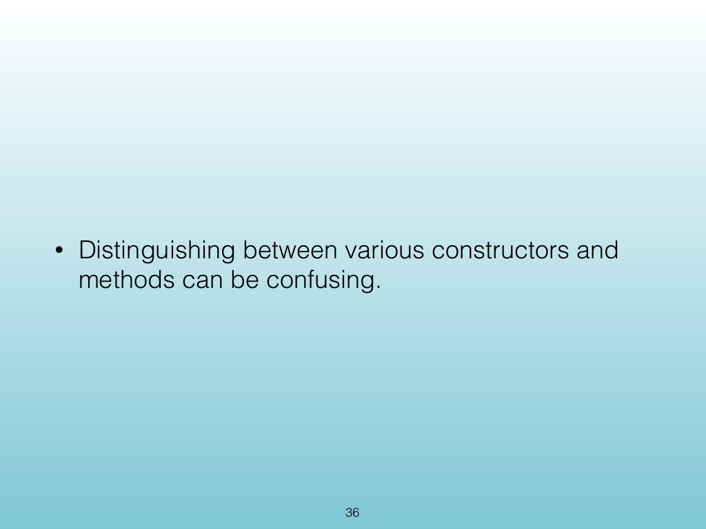
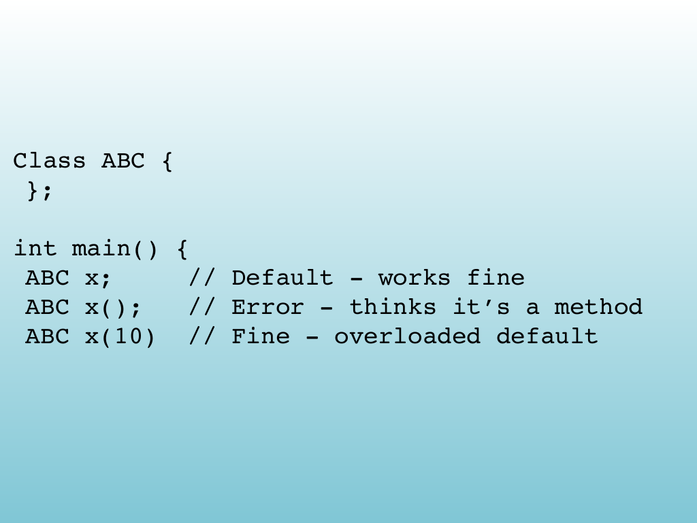
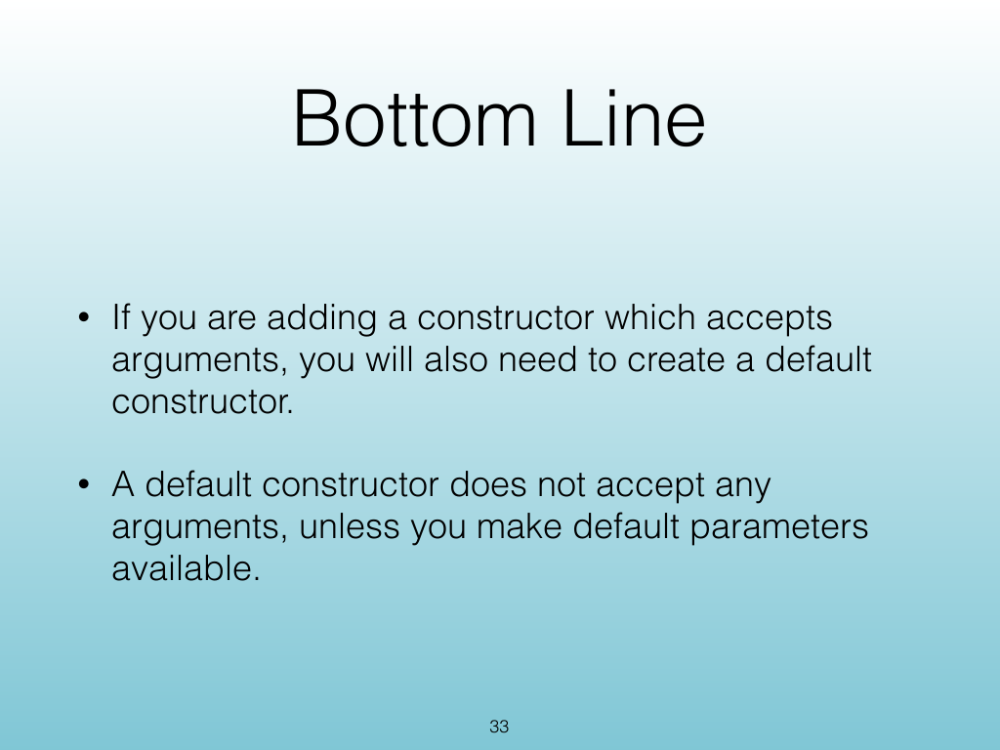
Destructors matter because an object may need to release resources or perform cleanup when its lifetime ends.
A destructor runs automatically when an object leaves scope or is explicitly destroyed, just before the object’s storage is reclaimed.
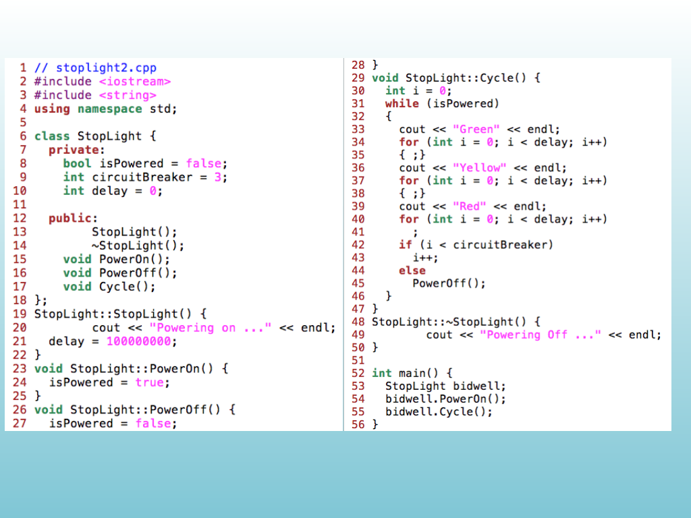
A class can have multiple overloaded constructors, but it has only one destructor because destruction does not take arguments and cannot be selected from a parameter list.
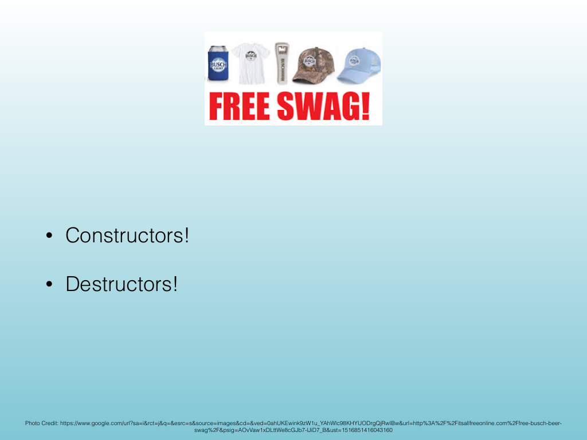
Modify the Date class so it uses constructors, including an overloaded constructor path for initializing a date with supplied values.
#include <iostream>
using namespace std;
class Date {
private:
int mo;
int day;
int year;
public:
Date(int = 1, int = 1, int = 1);
void PrintDate();
};
Date::Date(int m, int d, int y) {
mo = m;
day = d;
year = y;
if (mo > 12) mo = 99;
}
void Date::PrintDate() {
cout << mo << "/" << day << "/" << year << endl;
}
int main() {
Date date1, date2(10,15,2009);
Date date3(21,25,2017);
date1.PrintDate();
date2.PrintDate();
date3.PrintDate();
}CISP 400 · Fowler